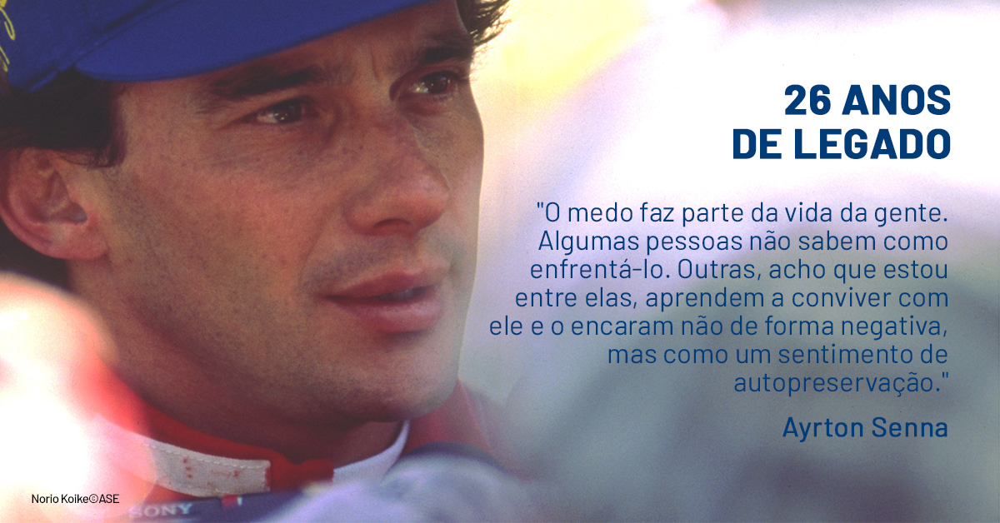

O Impacto de Ayrton Senna
Ayrton Senna deixou um legado duradouro, não apenas como um dos maiores pilotos de todos os tempos, mas também como um ícone global que inspirou milhões de pessoas. Após sua trágica morte em 1994, sua família fundou o Instituto Ayrton Senna, uma organização dedicada a melhorar a educação no Brasil.
Senna é lembrado por sua dedicação, sua paixão pela excelência e seu compromisso com a segurança no automobilismo. Sua memória continua viva através das gerações, e ele permanece uma inspiração para novos pilotos e fãs de automobilismo ao redor do mundo.
Leia sobre o Legado de Ayrton Senna